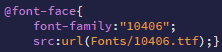

Редактирование и оформление текста
Как уже говорилось ранее текст очень важен, и более важна его содержательность и правильное, необходимое оформление для того чтобы заинтерисовать читателя.
Разберём некоторые свойства редактирования текста и их значения.
- text-align - расположение текста.
- justify
- center
- left
- right
- font-size - размер шрифта.
- px
- em
- cm
- font-family - шрифт. Может задаваться в значении как один из стандартных или же тот который будет добавлен в css таким образом , где @font-face - подключение хранящегося шрифта с указанным в ковычках его именем, а так же подключённым через src:url ( ) путём к файлу.
- cursive
- fantasy
- serif
- monospace
- inherit
- color - цвет текста, задаётся либо словом (например red) или же кодом цвета (#000000 - чёрный).
- (единицы измерения)
- (а так же стандартные шрифты)